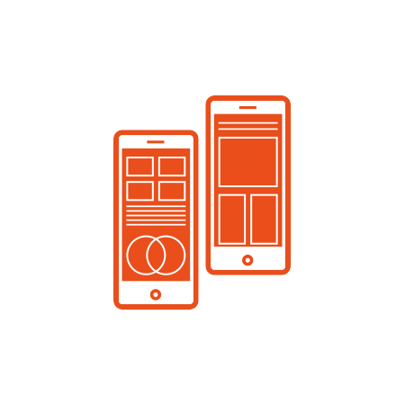
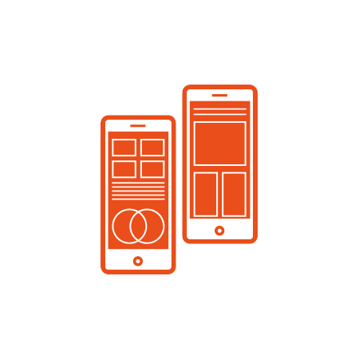

01
部门介绍
职能：爱特前端部门主要负责网站前端代码的实现。前端部门的作用是以html，css，JavaScript为主要语言来对网站表现层与结构层等前台部分做出完美构造，在实现设计师要带给用户的视觉冲击之外还能保证与后台交互实现网站对用户功能，且让网站满足各种用户需求。
02
部门介绍
职能：爱特工作室程序部主要负责在后台实现网站及应用程序的功能。程序部主要基于ASP.NET、PHP、JSP等技术，应用C++、C#、Java等语言开发应用程序，完成与SQL Server、MyS-QL等数据库的交互、设计对外API接口、开发手机APP等。
03
部门介绍
职能：爱特工作室UI设计部门，顾名思义负责的是各种设计工作。UI设计部门不仅会用Photoshop、Illustrator等软件进行网页、APP等各种界面的设计，更能够在设计静态页面的同时兼顾与用户之间的交互
04
部门介绍
职能：爱特APP开发部门是第一个跳出了传统的网页开发的部门，负责安卓端应用程序的开发。他们遵循Material Design的设计模式，利用C++、JAVA等语言进行应用程序后台的开发与构建，并使程序流畅的和数据库及网络进行交互，力求带给用户最好的使用体验。